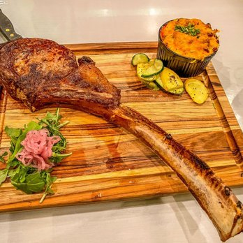
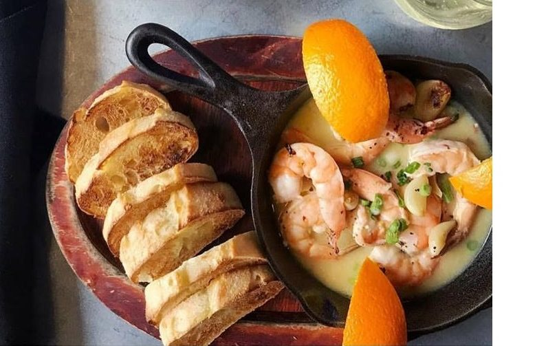

Sonora, California, offers a range of accommodations that cater to the needs and preferences of visitors. Nestled in the heart of the Sierra Nevada foothills, this charming town provides a delightful escape for travelers seeking a serene and picturesque getaway.
From cozy bed and breakfasts to modern hotels and rustic cabins,
Sonora offers a diverse selection of accommodations to suit every budget and taste.
- Diamondback Grill: Located in the heart of downtown Sonora, Diamondback Grill offers a diverse menu featuring American classics with a creative twist.
Their dishes range from juicy steaks and seafood to flavorful pasta and fresh salads.Click Here
-
Emberz: Known for its cozy atmosphere and wood-fired cuisine, Emberz specializes in artisanal pizzas cooked in a brick oven.
They also offer a selection of gourmet sandwiches, salads, and small plates using locally sourced ingredients.Click Here
-
The Standard Pour: This stylish gastropub is a popular spot for craft beer enthusiasts and foodies alike.
The Standard Pour offers a rotating selection of craft brews on tap, along with a menu featuring elevated pub fare, including burgers, sandwiches, and seasonal specials.Click Here
-
Mia's Café: A charming family-owned restaurant, Mia's Café serves up hearty breakfast and lunch options in a warm and inviting setting.
From fluffy pancakes and omelets to sandwiches and burgers, their menu caters to various tastes and cravings.Click Here
-
The Peppery: With a focus on Mexican and Southwestern cuisine, The Peppery is a local favorite for its flavorful dishes and festive ambiance.
From sizzling fajitas and enchiladas to zesty margaritas, this restaurant offers a taste of the Southwest.Click Here
-
Sonora Thai Cuisine: For those craving Thai flavors, Sonora Thai Cuisine delivers authentic dishes bursting with aromatic herbs and spices.
Their menu features classics like pad Thai, green curry, and tom yum soup, as well as vegetarian options.Click Here
-
Pine Tree Restaurant: Nestled in the Sierra Nevada foothills, Pine Tree Restaurant is renowned for its homestyle cooking and friendly service.
They serve up comfort food favorites like meatloaf, mashed potatoes, and chicken fried steak in a rustic setting.Click Here
-
The Bourbon Barrel: This trendy gastropub combines a wide selection of bourbon and whiskey with a menu of elevated comfort food.
From bourbon-glazed ribs and gourmet burgers to handcrafted cocktails, The Bourbon Barrel offers a unique dining experience.Click Here
-
Indigeny Reserve: While not strictly a restaurant, Indigeny Reserve is worth mentioning for its cider tasting room and farm-to-table snacks.
Set amidst an apple orchard and distillery, visitors can sample artisanal ciders, nibble on charcuterie, and enjoy the picturesque surroundings.Click Here
-
Fina's Café: Fina's Café is a cozy spot known for its Mediterranean-inspired cuisine and friendly atmosphere. They serve a variety of dishes,
including Greek specialties like gyros, falafel, and spanakopita, as well as sandwiches and salads.Click Here

